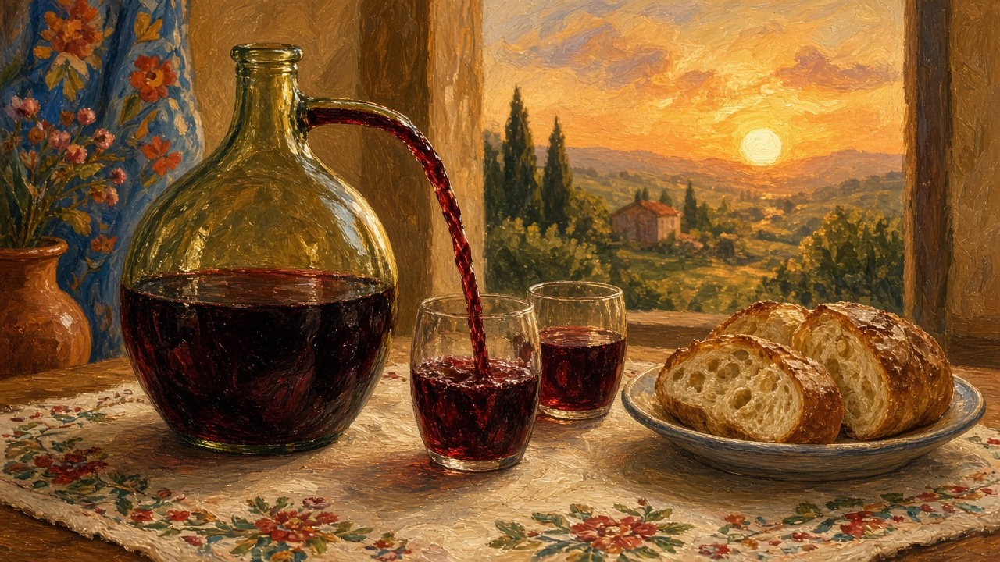

Wine
Vin. Not a tasting note. What a household still pours for a guest, a name day, or the quiet after the vine is stripped.

The glass on the table
A small glass, not a balloon. Red or pale, poured from a bottle with no label, or from a plastic demijohn that lives under the stairs. That is still the picture a lot of people mean by vin, even when the shop down the road sells something with a medal on the neck. Guests sit, bread is cut, and someone asks whether you take wine or the stronger one — that other pour is on țuică. Noroc when the glasses meet. You do not need a vocabulary of tannin. You need the habit of asking whether this table still pours from the house, or only opens a screw cap. The loaf that sits beside the glass is on bread. The room that holds both is on the house.
Vines, must, and the cellar
Where the slope faces south, culesul viilor is a week of buckets and sticky hands. The harvest page names that hurry; this page is what the juice becomes after it. Must is the sweet new stuff you drink while it still fizzes and stains everything it touches. Some of it stays must for a day or two. Some becomes vin de casă that will sit in a butoi or a glass demijohn in the cramă — the cool room under the house, or a shed that never quite warms — until a name day or a funeral needs it. People still say “am făcut vinul” the way they say the cellar is all right. Cotnari, Dealu Mare, Murfatlar, the Târnave: names you hear when someone wants to place a bottle on a map. Useful, and a little like a postcard. Most of the wine that actually lands on a Sunday table never left the commune. The weeks that fill that cellar are on harvest.
Days that ask for a pour
Some days the glass is not only a drink. A name day in the yard still puts wine on the table next to the colaci. A wedding pours it, and the taraf plays whether the bottles are house wine or shop. A funeral and a parastas bring wine with the bread and the candle — the year page keeps that table short and respectful; see the table in the year. After Liturgy the chalice is another matter: consecrated wine, not the demijohn. Belief and that cup sit on Orthodoxy. This page is only the ordinary pour that still walks into those rooms. Christmas and Easter tables still want a bottle even when the rest of the feast has become shop food. A guest is still met with a glass before the soup, or with a polite refusal that the house already understands.
Shop bottle and what stayed
Most weeks now the wine is bought. A town piață still sets a plastic bottle of someone’s uncle’s vintage next to a labeled one from a hillside people have heard of; that square is on the market. Apartment kitchens keep a bottle on top of the fridge. The unlabeled demijohn is rarer. The claim is not. You do not need a list of grape names. You need the habit of asking whether this house still makes, or only buys — and whether a guest is still poured from what the autumn put away, or from a bag-in-box that forgot the vine. The stronger glass, when it comes out, is not this page — see țuică.